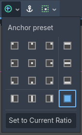
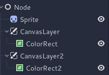

Custom post-processing
Introduction
Godot provides many post-processing effects out of the box, including Bloom, DOF, and SSAO, which are described in Environment and post-processing. However, advanced use cases may require custom effects. This article explains how to write your own custom effects.
The easiest way to implement a custom post-processing shader is to use Godot's built-in ability to read from the screen texture. If you're not familiar with this, you should read the Screen Reading Shaders Tutorial first.
Single pass post-processing
Post-processing effects are shaders applied to a frame after Godot has rendered
it. To apply a shader to a frame, create a CanvasLayer, and give it a ColorRect. Assign a
new ShaderMaterial to the newly created
ColorRect, and set the ColorRect's anchor preset to Full Rect:

Setting the anchor preset to Full Rect on the ColorRect node
Your scene tree will look something like this:
Note
Another more efficient method is to use a BackBufferCopy to copy a region of the screen to a buffer and to
access it in a shader script through a sampler2D using
hint_screen_texture.
Note
As of the time of writing, Godot does not support rendering to multiple buffers at the same time. Your post-processing shader will not have access to other render passes and buffers not exposed by Godot (such as depth or normal/roughness). You only have access to the rendered frame and buffers exposed by Godot as samplers.
For this demo, we will use this Sprite of a sheep.
Assign a new Shader to the ColorRect's
ShaderMaterial. You can access the frame's texture and UV with a
sampler2D using hint_screen_texture and the built-in SCREEN_UV
uniforms.
Copy the following code to your shader. The code below is a hex pixelization shader by arlez80,
shader_type canvas_item;
uniform vec2 size = vec2(32.0, 28.0);
// If you intend to read from mipmaps with `textureLod()` LOD values greater than `0.0`,
// use `filter_nearest_mipmap` instead. This shader doesn't require it.
uniform sampler2D screen_texture : hint_screen_texture, repeat_disable, filter_nearest;
void fragment() {
vec2 norm_size = size * SCREEN_PIXEL_SIZE;
bool less_than_half = mod(SCREEN_UV.y / 2.0, norm_size.y) / norm_size.y < 0.5;
vec2 uv = SCREEN_UV + vec2(norm_size.x * 0.5 * float(less_than_half), 0.0);
vec2 center_uv = floor(uv / norm_size) * norm_size;
vec2 norm_uv = mod(uv, norm_size) / norm_size;
center_uv += mix(vec2(0.0, 0.0),
mix(mix(vec2(norm_size.x, -norm_size.y),
vec2(0.0, -norm_size.y),
float(norm_uv.x < 0.5)),
mix(vec2(0.0, -norm_size.y),
vec2(-norm_size.x, -norm_size.y),
float(norm_uv.x < 0.5)),
float(less_than_half)),
float(norm_uv.y < 0.3333333) * float(norm_uv.y / 0.3333333 < (abs(norm_uv.x - 0.5) * 2.0)));
COLOR = textureLod(screen_texture, center_uv, 0.0);
}
The sheep will look something like this:

Multi-pass post-processing
Some post-processing effects like blurs are resource intensive. You can make them run a lot faster if you break them down in multiple passes. In a multipass material, each pass takes the result from the previous pass as an input and processes it.
To produce a multi-pass post-processing shader, you stack CanvasLayer and
ColorRect nodes. In the example above, you use a CanvasLayer object to
render a shader using the frame on the layer below. Apart from the node
structure, the steps are the same as with the single-pass post-processing
shader.
Your scene tree will look something like this:

As an example, you could write a full screen Gaussian blur effect by attaching
the following pieces of code to each of the ColorRect nodes. The order in
which you apply the shaders depends on the position of the CanvasLayer in
the scene tree, higher means sooner. For this blur shader, the order does not
matter.
shader_type canvas_item;
uniform sampler2D screen_texture : hint_screen_texture, repeat_disable, filter_nearest;
// Blurs the screen in the X-direction.
void fragment() {
vec3 col = texture(screen_texture, SCREEN_UV).xyz * 0.16;
col += texture(screen_texture, SCREEN_UV + vec2(SCREEN_PIXEL_SIZE.x, 0.0)).xyz * 0.15;
col += texture(screen_texture, SCREEN_UV + vec2(-SCREEN_PIXEL_SIZE.x, 0.0)).xyz * 0.15;
col += texture(screen_texture, SCREEN_UV + vec2(2.0 * SCREEN_PIXEL_SIZE.x, 0.0)).xyz * 0.12;
col += texture(screen_texture, SCREEN_UV + vec2(2.0 * -SCREEN_PIXEL_SIZE.x, 0.0)).xyz * 0.12;
col += texture(screen_texture, SCREEN_UV + vec2(3.0 * SCREEN_PIXEL_SIZE.x, 0.0)).xyz * 0.09;
col += texture(screen_texture, SCREEN_UV + vec2(3.0 * -SCREEN_PIXEL_SIZE.x, 0.0)).xyz * 0.09;
col += texture(screen_texture, SCREEN_UV + vec2(4.0 * SCREEN_PIXEL_SIZE.x, 0.0)).xyz * 0.05;
col += texture(screen_texture, SCREEN_UV + vec2(4.0 * -SCREEN_PIXEL_SIZE.x, 0.0)).xyz * 0.05;
COLOR.xyz = col;
}
shader_type canvas_item;
uniform sampler2D screen_texture : hint_screen_texture, repeat_disable, filter_nearest;
// Blurs the screen in the Y-direction.
void fragment() {
vec3 col = texture(screen_texture, SCREEN_UV).xyz * 0.16;
col += texture(screen_texture, SCREEN_UV + vec2(0.0, SCREEN_PIXEL_SIZE.y)).xyz * 0.15;
col += texture(screen_texture, SCREEN_UV + vec2(0.0, -SCREEN_PIXEL_SIZE.y)).xyz * 0.15;
col += texture(screen_texture, SCREEN_UV + vec2(0.0, 2.0 * SCREEN_PIXEL_SIZE.y)).xyz * 0.12;
col += texture(screen_texture, SCREEN_UV + vec2(0.0, 2.0 * -SCREEN_PIXEL_SIZE.y)).xyz * 0.12;
col += texture(screen_texture, SCREEN_UV + vec2(0.0, 3.0 * SCREEN_PIXEL_SIZE.y)).xyz * 0.09;
col += texture(screen_texture, SCREEN_UV + vec2(0.0, 3.0 * -SCREEN_PIXEL_SIZE.y)).xyz * 0.09;
col += texture(screen_texture, SCREEN_UV + vec2(0.0, 4.0 * SCREEN_PIXEL_SIZE.y)).xyz * 0.05;
col += texture(screen_texture, SCREEN_UV + vec2(0.0, 4.0 * -SCREEN_PIXEL_SIZE.y)).xyz * 0.05;
COLOR.xyz = col;
}
Using the above code, you should end up with a full screen blur effect like below.